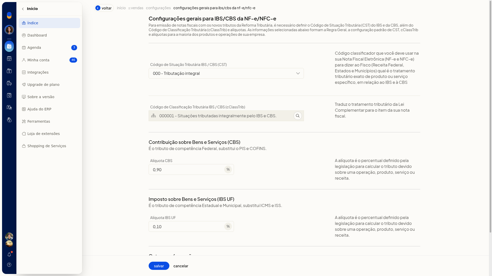
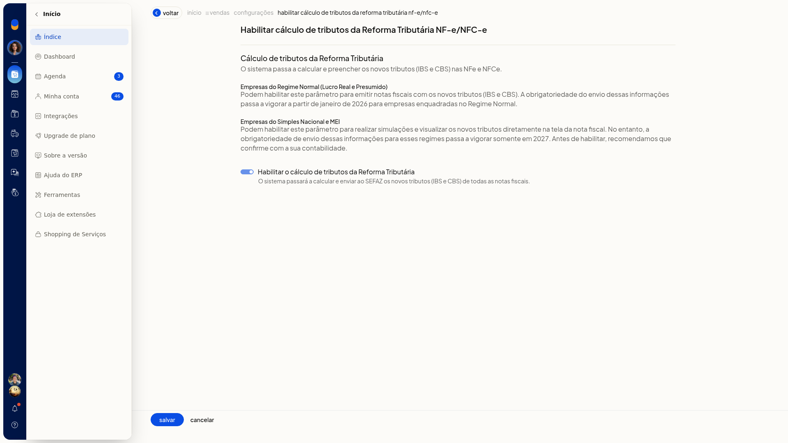
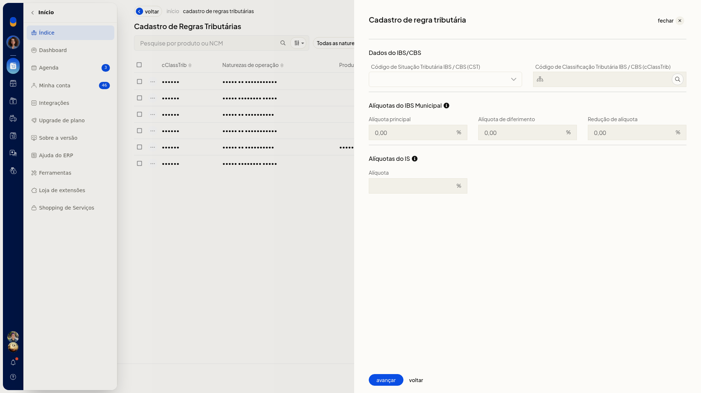
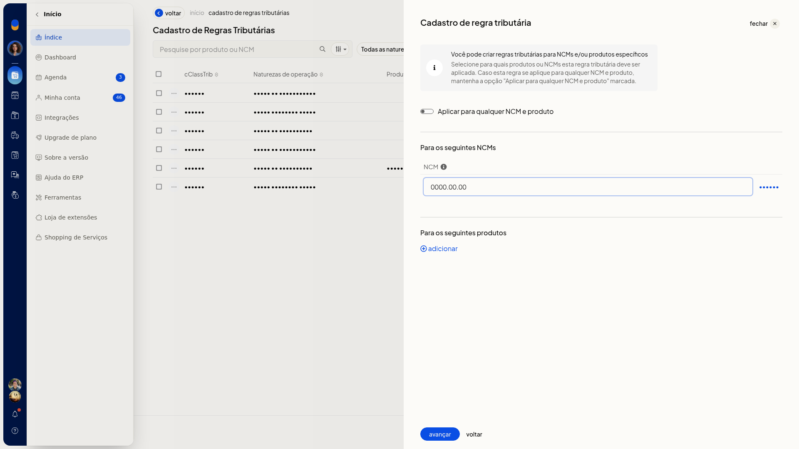
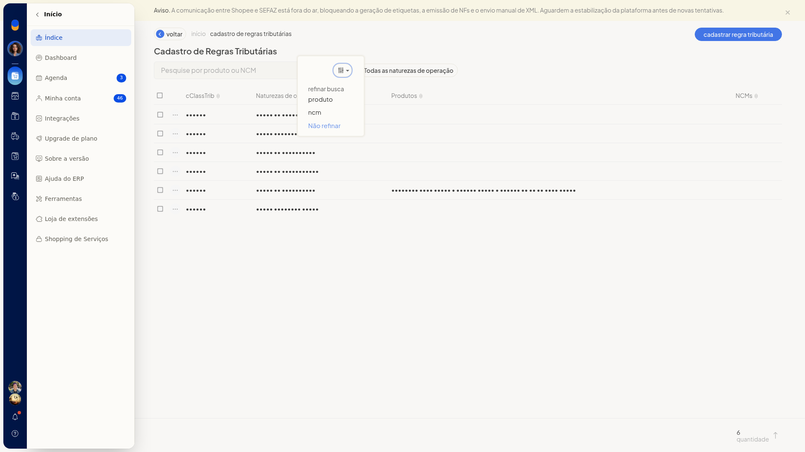
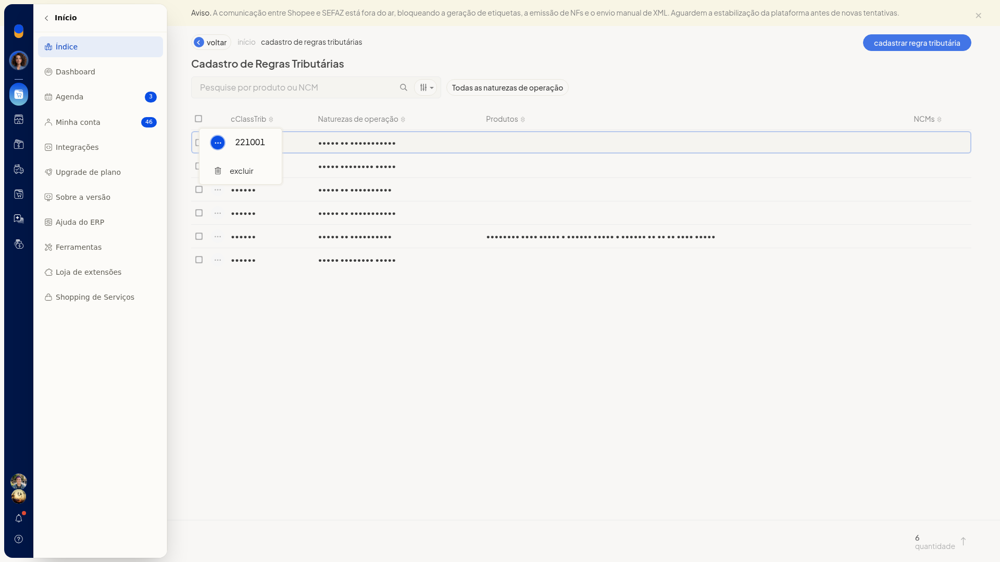

Reforma Tributária: configurar NF-e e NFC-e
No ERP da Olist, Tributação (RTC) é onde você define a classificação, as alíquotas e o cálculo do IBS e da CBS da Reforma Tributária do Consumo na NF-e e na NFC-e.
Você grava a regra geral dos produtos, liga o cálculo para esses tributos entrarem na emissão e cadastra uma regra por NCM, produto e natureza de operação quando um produto não deve seguir a regra geral. Se a opção não aparecer para você, peça acesso ao administrador da conta.
Pré-requisitos
- Naturezas de operação já cadastradas na empresa, para marcar a regra específica e filtrar a lista.
- NCM e identificação do produto, se a regra não valer para qualquer NCM e produto.
Importante
- IBS Municipal e IS aparecem como em breve, com efeito citado para janeiro de 2027, e não ficam editáveis.
- No cálculo, o Regime Normal passa a ser obrigatório em janeiro de 2026. Simples e MEI permanecem como simulação até o uso obrigatório em 2027.
- A lista de regras não oferece planilha, modelo, importar nem envio de arquivo.
- Os campos abaixo não estão indicados como obrigatórios.
Instruções
Configurar a regra geral
-
Acesse Configurações > Configurações ERP > Tributação (RTC).

-
Em NFe e NFCe, abra Configuração dos tributos e códigos de classificação. Essa regra geral é o padrão aplicado aos produtos.

-
Selecione o CST:
- 000 - Tributação integral
- 010 alíquotas uniformes
- 011 alíquotas uniformes reduzidas
- 200 Alíquota reduzida
- 221 Alíquota fixa proporcional
- 400 Isenção
- 410 Imunidade e não incidência
- 510 Diferimento
- 515 Diferimento com redução de alíquota
- 550 Suspensão
- 620 Tributação Monofásica
- 800 Transferência de crédito
- 810 Ajuste de IBS na ZFM
- 811 Ajustes
- 820 Tributação em documento específico
- 830 Exclusão da Base de Cálculo
-
Informe o cClassTrib. Na consulta, use Pesquisar e clique em Confirmar para aplicar o código. Cancelar fecha a consulta sem aplicar um código novo. A consulta não lista todos os códigos da tabela oficial. No caso integral, os códigos vistos incluem 000001, 000003, 000004, 000005 e 000006.

-
Informe CBS e IBS UF com vírgula no decimal, por exemplo 0,90 e 0,10. Essa classificação e essas alíquotas são o padrão usado na NF-e e na NFC-e.
Habilitar o cálculo
-
Em NFe e NFCe, abra Habilitar cálculo de tributos da Reforma Tributária.
-
Marque Habilitar o cálculo de tributos da Reforma Tributária. Com a opção marcada, a emissão calcula e envia IBS e CBS à SEFAZ nas notas fiscais.

Cadastrar uma regra específica
-
Em NFe e NFCe, abra Cadastro de regras tributárias. Use essa regra quando o produto não seguir a regra geral.

-
Clique em Cadastrar regra tributária. O primeiro passo é Dados do IBS/CBS.

-
Selecione o CST, consulte o cClassTrib e clique em Confirmar.

-
Informe CBS e IBS UF com vírgula no decimal. Um exemplo confirmado na tela é CST 000, cClassTrib 000001 - Situações tributadas integralmente, CBS 0,90 e IBS UF 0,10. IBS Municipal pode aparecer como 0,00 e IS vazio, sem edição.

-
Clique em Avançar. Deixe Aplicar para qualquer NCM e produto ligado para valer para todos os itens.

-
Desligue Aplicar para qualquer NCM e produto para informar um NCM, um produto ou os dois.

-
Informe o NCM completo no formato 0000.00.00, ou use ? para um grupo, por exemplo 8471.??.??. Clique em salvar na linha do NCM.


-
Para limitar por produto, pesquise por nome, SKU ou GTIN e use Código (SKU).


-
Clique em Avançar e marque as naturezas de operação que devem usar a regra. Venda de mercadorias (Saída) pode ser marcada.


-
Clique em Salvar regra. A regra só é criada nesse clique. Voltar sai do cadastro e retorna a Tributação (RTC) sem criar a regra.
Consultar e filtrar regras
-
Em NFe e NFCe, abra Cadastro de regras tributárias. A lista Cadastro de Regras Tributárias mostra cClassTrib, Naturezas de operação, Produtos, NCMs e um contador de quantidade.
-
Pesquise em Pesquise por produto ou NCM. No refinamento, escolha produto, ncm ou Não refinar.

-
Abra Todas as naturezas de operação, escolha a Natureza de operação e clique em aplicar. Cancelar fecha o filtro sem aplicá-lo.

-
Abra o menu de ações da linha. A opção exibida é excluir. Não clique em excluir se a regra deve ser mantida.

Resultado
Em Tributação (RTC), o item de habilitar o cálculo da NF-e e da NFC-e pode aparecer como habilitado. A configuração geral mostra o CST, o cClassTrib e as alíquotas atuais. As regras salvas ficam em Cadastro de Regras Tributárias, com cClassTrib, naturezas, produtos, NCMs e a quantidade.
Informações adicionais
- A regra específica vale só para as naturezas de operação marcadas no cadastro.
- A pesquisa da lista refina por produto ou NCM e o filtro usa as naturezas já cadastradas na empresa.